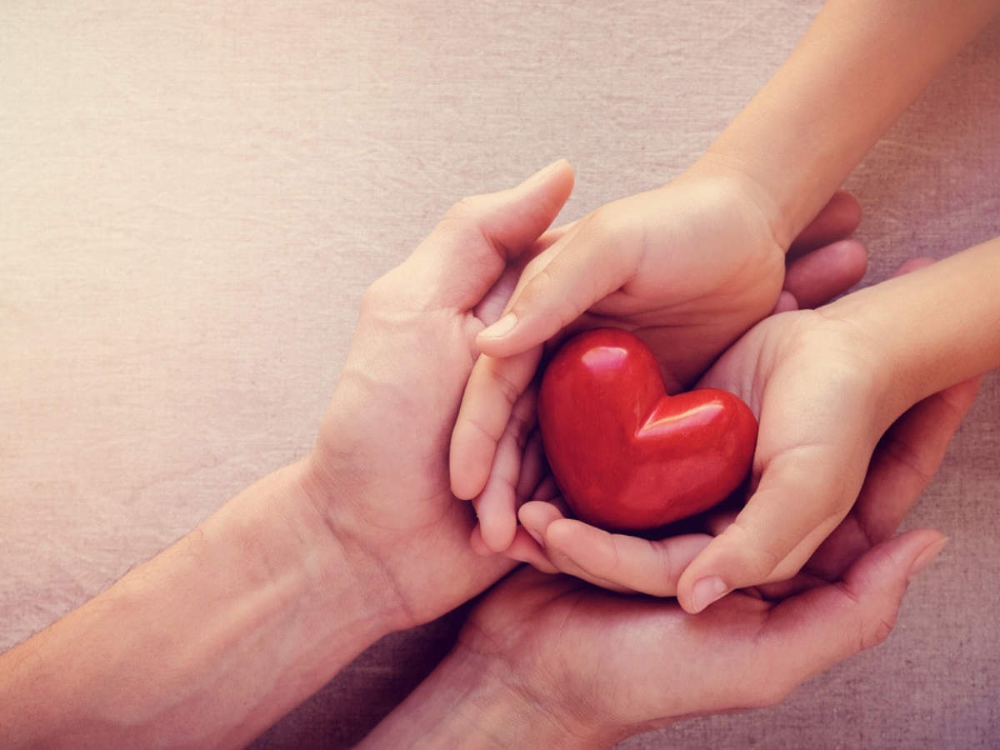

What is Blood Donation?
Blood Donation is a Donation to take out your blood and give it to someone else who has less blood in their body/system. Blood Donation can help other people who have mental problems. One drop of blood can save anyones life.

What is the process of Blood Donation?
The process of Blood Donation is that you will go lay down on a bed. Then, an employee will come and give you a heart to sqeeze while taking out your blood for the donation. It will take about 1 hour and 15 minutes to take out the blood for blood donation.
How can Blood Donation be used in specfic situations?
- Blood Donation specfic situations are when someone doesn't have enough red blood cells.
- Blood donation can also treat people with dieases like cancer.
- Also Blood is essential to help patients survive surgeries, cancer treatment, chronic illnesses, and traumatic injuries.

What is the importance Blood Donation Camps?
The importance of blood donation camps is that it will help patients with problems or dieases or shortage of blood. Another important thing about blood donation camps is to select a suitable donor whose blood is safe to the recipients and who himself/herself shall not in any way be harmed by blood donation.
